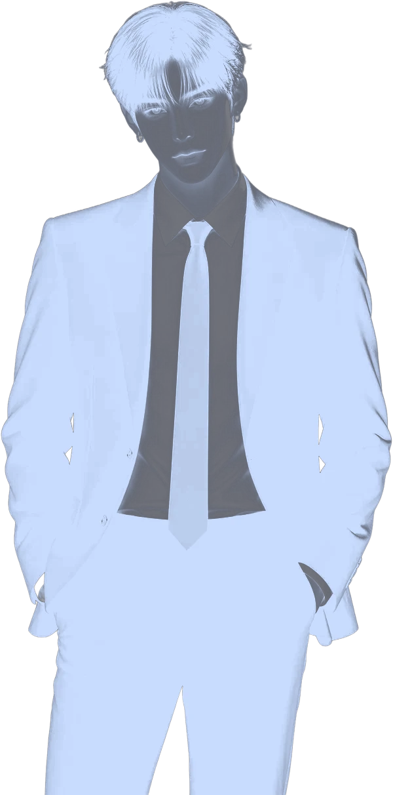
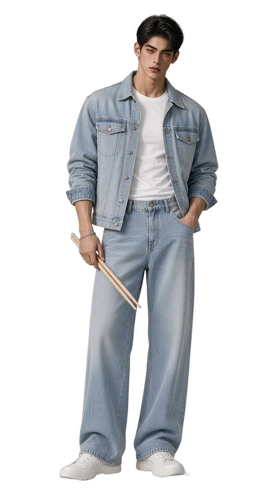
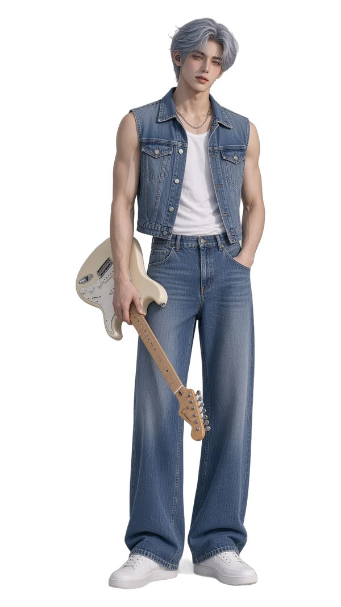
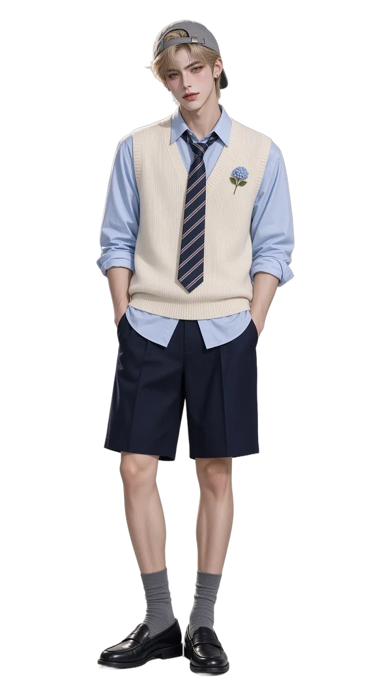

▶ PLAYSP 00:00:00
2018.07.22MONSOON · DEBUT
GYL-98




GYEOLLAK · 결락 · 缺落
비가 맺지
못한 것들
우리는 닿는 순간부터 번지고 있었다
01 — 結 · 맺히다Where clouds
Where clouds
condense.
구름이 무게를 얻어 한 방울로 맺힌다. 결(結).
02 — 缺 · 떨어져 나가다One stroke
One stroke
falls away.
결의 ㅣ 한 획이 빠져 비가 된다. 떨어진 방울은 금붕어가 되어 아래로 헤엄친다.
03 — 그해 여름The sea
The sea
we kept.
2018년 7월 22일, 장맛비 속 데뷔. 내려가기 전 마지막으로 본 바다.
04 — 落花 · 꽃이 진다Petals
Petals
let go.
수면에 닿은 것들은 빛으로 찍힌 자국만 남긴다.
05 — 심연 · 숨이 닿지 않는 곳Below,
Below,
no breath.
가라앉는 사람. 기억은 없고 반응만 남아 있었다.
05 — 손A hand
A hand
reaches.
이름 모를 손이 닿는다. 유일하게 따뜻한 것.
06 — 결 · 물결, 숨결Eyes open.
Eyes open.
Rising.
눈을 뜬다. 떨어진 꽃도, 결국 다시 떠오른다.